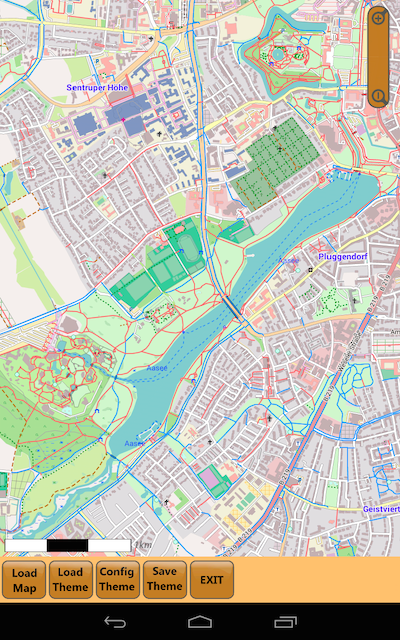

Any map element in the Freizeitkarte maps can be individually made visible or invisible. This can be archieved with the supplementary Android App "Theme-Configurator". The changes take effect immediately after (re) starting the maps app (Locus Map, OruxMaps, ...). The app "Theme-Configurator" makes it possible to adapt the map representation to your needs. For example: you can make the contour lines hidden or activate the public transport stops.
|  Main menu with map representation. |
Configuration of map features. |
Adaptation of cards features:
- Load Map
- Load Theme
- Config Theme
- Save Theme
Installation notes:
- the theme Configurator is in state "beta test"
- the installation on your Android device must be carried out manually:
- Security settings: allow the installation of apps from sources other than the Play Store.
- download the app "Theme-Configurator" (APK)
- click on the downloaded APK file; confirm installation
Remark: The Theme-Configurator requires the installation of a compatible file manager. Otherwise you aren't able to select a map or theme file. Currently compatible are "OI File Manager" or "ES File Explorer"..
Download: Theme-Configurator (0.4.12 beta)